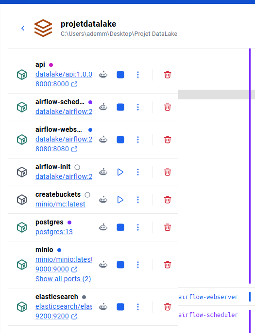
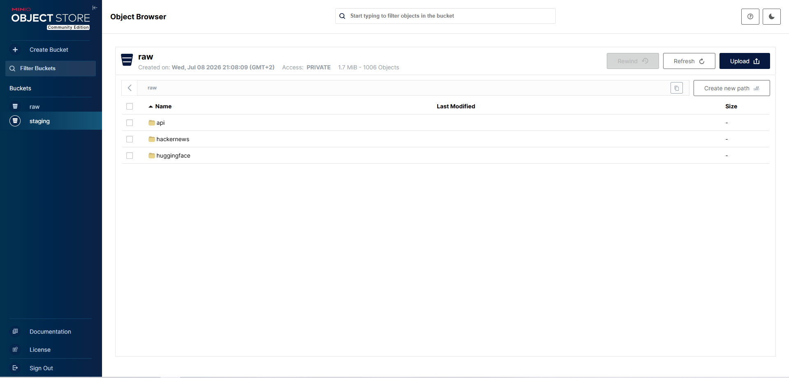

/ingest et /ingest_fastCe projet consiste à concevoir et implémenter un data lake complet, de l'ingestion des données jusqu'à leur exposition via une API. L'exercice couvre l'ensemble de la chaîne de valeur d'une plateforme de données moderne : acquisition de sources hétérogènes, raffinage progressif, orchestration reproductible et mise à disposition.
Au-delà des exigences fonctionnelles, l'objectif que nous nous sommes fixé est de produire une solution qui tienne les standards d'un environnement de production : configuration externalisée, gestion d'erreurs explicite, reproductibilité par conteneurisation, et surtout décisions techniques fondées sur la mesure plutôt que sur l'intuition. Cette exigence méthodologique constitue le fil conducteur du présent rapport.
Le niveau standard et le niveau avancé ont tous deux été implémentés et validés.
| Exigence du sujet | Statut | Réalisation |
|---|---|---|
| Data lake en zones distinctes | Traité | Architecture RAW / STAGING / CURATED |
| Zone RAW en S3 ou Elasticsearch | Traité | MinIO, stockage objet compatible S3 |
| Deux sources (fichier + API) | Traité | Dataset HuggingFace + API Hacker News |
| Pipelines de transformation | Traité | RAW→STAGING et STAGING→CURATED |
| Pipeline d'intégration (Airflow / DVC) | Traité | DAG Airflow, scheduling horaire, XCom |
| API Gateway (5 endpoints) | Traité | 9 endpoints exposés |
| Intégration ML / Deep Learning | Traité | Transformer RoBERTa (75,6 % de précision) |
[Avancé] /ingest et /ingest_fast (≥ 30 %) | Traité | Jusqu'à +83,2 % (×6,0) |
Le sujet laissant une liberté totale sur le choix des données, nous avons retenu l'analyse de sentiment de texte social (NLP). Trois raisons ont motivé ce choix :
| Source API | Source fichier | |
|---|---|---|
| Fournisseur | Hacker News (API Firebase publique) | HuggingFace — cardiffnlp/tweet_eval |
| Nature | Posts technologiques en temps réel | Tweets annotés en sentiment |
| Volume par cycle | 50 posts | 500 textes |
| Intérêt | Flux vivant, justifie le scheduling | Fournit une vérité terrain |
Le dataset HuggingFace conserve son label d'origine
(true_label) tout au long du pipeline. Ce choix, en apparence
anodin, permet au data lake de s'auto-évaluer : à chaque
exécution, la précision du modèle est recalculée en confrontant ses
prédictions à la vérité terrain. La qualité devient une métrique surveillée,
et non une hypothèse.
La source API initialement retenue était Reddit. En cours de projet, la plateforme a fermé la création d'applications legacy, rendant l'obtention de clés impossible. La couche d'ingestion ayant été conçue pour découpler la source du reste du pipeline, la bascule vers Hacker News n'a nécessité la modification que d'un unique fichier ; l'architecture, les transformations, l'orchestration et l'API sont restées inchangées. Cet incident valide a posteriori la pertinence du découplage.
Nous avons retenu l'architecture classique en trois zones (medallion : bronze / argent / or), chacune assumant une responsabilité unique et clairement délimitée.
| Zone | Technologie | Justification |
|---|---|---|
| RAW | MinIO (S3) | Satisfait la contrainte du sujet (S3 ou Elasticsearch). MinIO implémente l'API S3 à l'identique : le code écrit ici fonctionnerait sur AWS S3 sans modification, seule l'adresse du point d'entrée changeant. Coût nul, exécution locale. |
| STAGING | Parquet sur MinIO | Format orienté colonne : compression nettement supérieure au JSON et lectures analytiques accélérées (possibilité de ne lire qu'une colonne). C'est le format de référence de la donnée analytique. |
| CURATED | Elasticsearch | Le domaine étant textuel, la zone finale doit servir deux usages : recherche full-text (index inversé) et agrégations (sentiment moyen par source, distributions). Elasticsearch répond aux deux en une seule requête, là où un SGBD relationnel serait inadapté au premier. |
L'intégralité de la solution est décrite dans un unique fichier
docker-compose.yml : une seule commande
(docker compose up -d --build) démarre les sept services. Cette
conteneurisation garantit la reproductibilité : la solution se
comporte de façon identique sur n'importe quel poste.

La zone RAW applique une règle stricte : la donnée brute n'est jamais modifiée. Elle est stockée telle que la source la fournit, accompagnée d'une simple enveloppe de métadonnées d'ingestion (source, horodatage, volume). Cette discipline garantit que toute zone en aval reste entièrement reconstructible : si la logique de nettoyage évolue, il suffit de rejouer le pipeline depuis le brut.
Les objets sont partitionnés par source puis par date. Le partitionnement rend le lac navigable et autorise le re-traitement ciblé d'une journée précise sans relire l'intégralité du volume.

raw (1 006 objets) : partitionnement de
premier niveau par source (hackernews, huggingface,
api pour les ingestions à la demande).

C'est l'étape d'intégration à proprement parler, et le cœur de la
problématique posée par le sujet. Un post Hacker News
({id, title, by, score, time}) et un tweet
({text, label}) n'ont aucune structure commune. Un
normaliseur par source, sélectionné par un aiguillage sur le
préfixe de la clé S3, projette chaque enregistrement vers un
schéma unique :
| Colonne | Description |
|---|---|
id | Identifiant unique et déterministe |
source | hackernews | huggingface | api |
text / text_clean | Texte d'origine / texte nettoyé |
true_label | Vérité terrain (dataset annoté uniquement) |
created_at, ingested_at | Horodatages normalisés en ISO 8601 |
La fonction de nettoyage décode les entités HTML, retire les balises et les URLs, puis normalise les espaces. En revanche, elle ne met pas le texte en minuscules et conserve la ponctuation. Ce n'est pas un oubli : les modèles de sentiment exploitent les majuscules (emphase) et la ponctuation répétée comme signaux d'intensité. Un nettoyage plus agressif dégraderait la qualité en aval. Le bon prétraitement dépend toujours du traitement qui le suit.
Deux garde-fous de robustesse complètent le pipeline : un dédoublonnage sur l'identifiant (une ré-ingestion ne duplique pas les données) et l'élimination des enregistrements devenus vides après nettoyage.

Le dernier pipeline calcule le sentiment de chaque texte, puis indexe les
documents enrichis dans Elasticsearch. L'indexation utilise l'identifiant métier
comme _id du document, ce qui rend l'opération
idempotente : rejouer le pipeline met à jour les documents
existants au lieu de créer des doublons — propriété indispensable pour une
chaîne exécutée toutes les heures.
Le premier moteur implémenté fut VADER, un modèle à base de lexique et de règles, conçu pour le texte social. Rapide et déterministe, il présente néanmoins une précision décevante de 52,8 % sur nos 500 textes annotés — à peine au-dessus d'une classification naïve.
Plutôt que d'accepter ce chiffre, nous avons diagnostiqué en construisant la matrice de confusion :
| Classe | Vérité terrain | Prédictions VADER | Diagnostic |
|---|---|---|---|
| neutral | 217 | 143 | fortement sous-prédite |
| positive | 200 | 246 | sur-prédite |
| negative | 83 | 111 | sur-prédite |
Le modèle bascule trop facilement hors du neutre : ses seuils par défaut (±0,05) sont trop étroits. Un élargissement de la bande neutre porte la précision à 58,6 %, mais nous avons rejeté ce résultat pour des raisons méthodologiques : le seuil optimal avait été recherché sur les données mêmes qui servaient à l'évaluer, ce qui constitue un surapprentissage et produit un chiffre non généralisable. VADER reste conservé comme baseline de comparaison.
La limite de VADER est structurelle : un modèle lexical ne comprend ni le
contexte, ni la négation complexe, ni le sarcasme. Nous avons donc intégré
cardiffnlp/twitter-roberta-base-sentiment-latest,
un Transformer RoBERTa pré-entraîné sur environ 124 millions de tweets puis
spécialisé sur la tâche de sentiment à trois classes.
| Moteur | Nature | Précision | Rappel par classe (nég. / neu. / pos.) |
|---|---|---|---|
| Baseline « tout neutre » | — | 43,4 % | — |
| VADER | Lexique + règles | 52,8 % | déséquilibré |
| RoBERTa | Transformer (Deep Learning) | 75,6 % | 0,77 / 0,76 / 0,75 |
Le gain de +22,8 points n'est pas le seul enseignement : le rappel par classe est équilibré (0,77 / 0,76 / 0,75). Le modèle ne sacrifie aucune classe pour gonfler sa précision globale — un piège fréquent que seule une métrique désagrégée permet de détecter.
Le moteur est pilotable par configuration
(SENTIMENT_ENGINE=transformer|vader), ce qui permet de basculer
entre les deux sans modifier une ligne de code des pipelines.
Airflow a été préféré à DVC car il apporte, en plus de la reproductibilité, le scheduling requis pour ingérer l'API à intervalle régulier ainsi qu'une interface de supervision — un profil bien plus proche d'un usage de production.
Le DAG datalake_pipeline enchaîne cinq tâches. Les deux ingestions,
indépendantes, s'exécutent en parallèle ; la transformation
attend leur convergence (fan-in).

retries=2 et d'un execution_timeout, afin d'absorber
une indisponibilité transitoire de l'API.report récupère les valeurs de
retour des tâches amont pour produire une synthèse de cycle, incluant les
métriques de qualité du modèle.Les imports de notre code sont effectués à l'intérieur des fonctions et non en tête du fichier de DAG. Airflow ré-analyse en effet tous les fichiers de DAG toutes les trente secondes : importer PyTorch à chaque analyse saturerait le scheduler. Un fichier de DAG doit se parser en moins d'une seconde.

Ce rapport constitue une validation opérationnelle : après plusieurs cycles, la source HuggingFace reste stable à 500 textes (identifiants déterministes, donc dédoublonnés), tandis que Hacker News croît à 180 posts — les top stories ayant réellement changé entre les exécutions. Le comportement incrémental attendu est vérifié.

FastAPI a été retenu pour son asynchronisme natif, sa validation déclarative par Pydantic et sa documentation OpenAPI générée automatiquement. L'API expose neuf endpoints — les cinq exigés, complétés par quatre endpoints additionnels.

| Endpoint | Rôle |
|---|---|
GET /health | État des services ; renvoie 503 si un composant est injoignable |
GET /stats | Volumétrie des trois zones : objets, octets, documents, distribution |
GET /raw, /raw/object | Listing des objets bruts et lecture d'un objet |
GET /staging, /staging/files | Lecture des instantanés Parquet, filtrable par source |
GET /curated | Recherche full-text + filtres exacts + pagination |
POST /ingest, /ingest_fast | [Avancé] Ingestion à la demande — voir section 8 |
L'endpoint /health respecte la convention attendue par les sondes
d'infrastructure : le code HTTP porte le verdict (200 ou 503), et
non uniquement le corps de la réponse.

/stats : volumétrie consolidée des trois zones,
avec ventilation par source et par sentiment obtenue via une agrégation
Elasticsearch.
L'endpoint /curated combine une requête booléenne Elasticsearch
(must pour le full-text scoré, filter pour les filtres
exacts — ces derniers étant mis en cache par le moteur) avec une pagination.

q=AI) et filtre de sentiment (negative). Les résultats
sont sémantiquement cohérents : « Guy is banned by OpenAI for cyber
abuse », « What's slowing down the AI buildout ».Un soin particulier a été porté aux cas d'erreur, critère explicite d'évaluation. Les codes HTTP sont respectés et les messages sont actionnables :
| Code | Situation | Message renvoyé |
|---|---|---|
| 422 | Valeur non valide | « Sentiment invalide : 'heureux'. Valeurs acceptées : negative, neutral, positive. » |
| 404 | Ressource inexistante | « Aucun objet brut pour la source 'twitter'. Sources valides : hackernews, huggingface. » |
| 503 | Service injoignable | Identification du composant défaillant (MinIO ou Elasticsearch) |
Le niveau avancé exige un endpoint d'ingestion propageant des textes à travers tout le pipeline, ainsi qu'une variante optimisée offrant au minimum 30 % de gain. Les deux traversent l'intégralité de la chaîne : écriture en zone RAW, scoring, indexation en zone CURATED.

/ingest_fast : structure JSON conforme à
celle imposée par le sujet.
elapsed_seconds chronométré côté serveur.
Avant toute mesure de temps, chaque répétition vérifie que les deux endpoints
produisent le même résultat : identifiants identiques, labels de
sentiment rigoureusement identiques, scores coïncidant à
1e-5 près.
Pourquoi une tolérance et non une égalité stricte ? En mode
batch, les textes sont complétés (padding) à une longueur
commune et les multiplications matricielles s'exécutent dans un ordre différent.
Or l'addition en virgule flottante n'est pas associative :
(a+b)+c ≠ a+(b+c) au bit près. L'écart observé, de l'ordre de
1e-7, est un bruit numérique inhérent au batching — et non un
défaut de correction.
| # | Optimisation | Principe et effet |
|---|---|---|
| 1 | Inférence par lots | Le gain dominant. L'implémentation naïve effectue N passes du Transformer ; la version optimisée empile les N textes dans un seul tenseur et exploite les multiplications matricielles vectorisées. Une seule passe. |
| 2 | Indexation _bulk |
Un unique aller-retour HTTP vers Elasticsearch au lieu de N indexations unitaires. |
| 3 | Écritures S3 parallèles | Les N écritures en zone RAW sont indépendantes et limitées par les entrées/sorties : un pool de threads les recouvre. |
| 4 | Recouvrement I/O ↔ calcul | Les écritures RAW ne dépendent pas du scoring : elles sont lancées en tâche de fond pendant l'inférence. Leur coût devient quasi invisible. |
| 5 | Pool de threads partagé | Instancié une seule fois pour le processus (voir encadré ci-dessous). |
Trois optimisations complémentaires ont été appliquées dans les
couches communes — torch.inference_mode() (+16 % sur
l'inférence), mise en cache des clients S3 et Elasticsearch, et passage du
translog Elasticsearch en mode asynchrone (+21 % sur les écritures).
Elles bénéficient aux deux endpoints et ne faussent donc pas la
comparaison.
Une première campagne a révélé que /ingest_fast était
plus lent que /ingest sur un batch de 1
(−16 %). L'analyse a identifié deux causes, toutes deux issues de notre propre
code : le pool de threads était recréé à chaque requête, et
l'indexation bulk déclenchait un refresh séparé, soit deux
allers-retours HTTP au lieu d'un. Après correction (pool partagé,
refresh intégré à la requête bulk), le gain à N=1 est
redevenu positif. Sans mesure systématique, une « optimisation » qui
dégrade les performances serait passée inaperçue.

| Batch | /ingest |
/ingest_fast | Gain | Accélération | Équivalence |
|---|---|---|---|---|---|
| 1 | 0,1614 s | 0,1100 s | +31,8 % | ×1,5 | OK |
| 2 | 0,2175 s | 0,1176 s | +45,9 % | ×1,8 | OK |
| 5 | 0,4755 s | 0,1745 s | +63,3 % | ×2,7 | OK |
| 10 | 0,9927 s | 0,2567 s | +74,1 % | ×3,9 | OK |
| 25 | 2,3459 s | 0,5000 s | +78,7 % | ×4,7 | OK |
| 50 | 4,9024 s | 0,8950 s | +81,7 % | ×5,5 | OK |
| 100 | 10,0249 s | 1,6840 s | +83,2 % | ×6,0 | OK |
La progression du gain (+31,8 % à N=1, +83,2 % à N=100) n'est pas fortuite : elle est la signature directe de la loi d'Amdahl. Le profilage du pipeline sur un texte unique en donne la clé :
| Étape | Temps médian | Compressible à N=1 ? |
|---|---|---|
| Indexation Elasticsearch (1 document) | ≈ 56 ms | Non — un aller-retour HTTP incompressible |
| Inférence RoBERTa (1 texte) | ≈ 46 ms | Non — coût fixe du modèle |
| Écriture S3 (zone RAW) | ≈ 12 ms | Oui — recouverte par le calcul |
| Divers | ≈ 4 ms | Marginal |
Sur un texte unique, environ 90 % du temps est un coût fixe que ni le batching ni le parallélisme ne peuvent réduire : il n'y a qu'un texte à traiter et qu'un document à écrire. L'accélération est donc bornée par la fraction non parallélisable du travail. À mesure que le batch grandit, cette fraction devient marginale et le gain converge vers un facteur 6.
Le résultat à N=1 (+31,8 %) est par ailleurs le plus variable d'une campagne à l'autre — nous avons mesuré des valeurs comprises entre +15 % et +32 %. C'est cohérent : les écarts y sont de l'ordre de quelques dizaines de millisecondes, donc très sensibles au bruit de mesure. Le cas d'usage réel d'une API d'ingestion étant le traitement par lots, c'est sur ce régime que la solution doit être jugée — et le gain y est massif et stable.
Pour tenter de réduire le coût fixe du modèle, nous avons évalué la quantification dynamique int8 (remplacement des poids flottants 32 bits par des entiers 8 bits sur les couches linéaires). Les mesures ont été sans appel :
L'optimisation a donc été écartée : plus lente et moins fidèle. Nous la documentons délibérément, car une démarche d'ingénierie se juge autant à ce qu'elle rejette, sur preuves, qu'à ce qu'elle retient.
Le sujet suggère Numba, qui compile en code machine les boucles Python opérant sur des tableaux NumPy. Le profilage montre qu'il serait ici sans effet : le goulot d'étranglement n'est pas une boucle numérique en Python, mais (a) l'inférence d'un réseau de neurones — déjà exécutée par le noyau C++/ATen optimisé de PyTorch — et (b) les entrées/sorties réseau vers S3 et Elasticsearch. Optimiser ce qui n'est pas le goulot d'étranglement ne produit aucun gain. Nous avons donc ciblé le batching et le parallélisme d'I/O, là où le temps se trouve réellement.
Ces incidents, tous diagnostiqués et corrigés, illustrent la réalité de la mise au point d'une chaîne de données.
| Difficulté | Diagnostic | Résolution |
|---|---|---|
| Fermeture de l'API Reddit | La plateforme a supprimé la création d'applications legacy en cours de projet. | Bascule vers Hacker News. Grâce au découplage de la couche d'ingestion, un seul fichier a été modifié. |
| Conflit de DLL sous Windows | PyTorch et PyArrow embarquent chacun un runtime OpenMP (libiomp5md.dll). Chargé en second, PyTorch échoue à initialiser c10.dll. Hypothèse validée par test d'inversion de l'ordre d'import. |
Module dédié torch_first.py, importé en tête des points d'entrée, qui rend la contrainte explicite et documentée plutôt qu'implicite. |
| Permissions du volume Airflow | Le volume de cache du modèle était créé sous root, alors qu'Airflow s'exécute sous l'UID 50000 → PermissionError. |
chown du répertoire dans l'image, Docker initialisant le volume avec le propriétaire du dossier de l'image. |
| Dépendances et Python 3.13 | Absence de wheels précompilés pour une version de Python très récente. | Montée de version ciblée de pyarrow et numba. |
bulk plus lent que l'indexation unitaire |
Sur un batch de 1, notre bulk_index (74 ms) dépassait es.index (56 ms) : un refresh séparé provoquait deux allers-retours HTTP. |
refresh=True intégré à la requête bulk. |
| Effet de bord global | L'accesseur du modèle appelait torch.set_grad_enabled(False), mutant l'état de tout le processus. |
Remplacement par un torch.inference_mode() de portée locale, au moment du calcul. |
Le modèle twitter-roberta-base-sentiment-latest est entraîné sur des
tweets en anglais. Soumis à des textes français, il les classe
systématiquement en neutral avec un score proche de zéro : il n'y
détecte aucun signal (visible en figure 13). Ce n'est pas un défaut du pipeline
— qui traite correctement le texte — mais une limite du modèle
choisi, à connaître avant tout déploiement sur des données
francophones.
Correction possible : substituer
cardiffnlp/twitter-xlm-roberta-base-sentiment, variante
multilingue du même modèle. L'architecture le permet sans aucune
modification de code : le nom du modèle est une variable
d'environnement (SENTIMENT_MODEL).
| Limite | Piste d'amélioration |
|---|---|
| Re-traitement intégral en staging | Le pipeline RAW→STAGING relit l'ensemble de la zone brute à chaque cycle. Acceptable à cette volumétrie, mais coûteux à l'échelle. Un traitement incrémental (ne lire que les partitions postérieures au dernier instantané) serait la suite naturelle. |
| Absence de tests automatisés | La validation a été empirique (exécution réelle de chaque étape). Une suite
pytest couvrant les normaliseurs et le nettoyage sécuriserait les
évolutions futures. |
| Sécurité désactivée | Elasticsearch tourne sans authentification et l'API est ouverte : acceptable
pour un déploiement local, à proscrire en production (TLS, authentification,
secrets gérés hors .env). |
| Inférence sur CPU | Le débit plafonne à environ 60 textes/seconde. Un portage GPU ou un modèle distillé (DistilRoBERTa) offrirait un ordre de grandeur supplémentaire. |
| Aucune couche de visualisation | Les données curated se prêtent naturellement à un tableau de bord Kibana (évolution du sentiment dans le temps, détection de signaux faibles). |
Le data lake réalisé couvre l'intégralité du périmètre demandé, niveau avancé compris. Deux sources hétérogènes sont ingérées, unifiées dans un schéma commun, enrichies par un modèle de Deep Learning atteignant 75,6 % de précision, puis exposées via neuf endpoints. L'ensemble est orchestré par Airflow, entièrement conteneurisé, et démarre par une commande unique. L'endpoint optimisé atteint +83,2 % de gain (×6,0), très au-delà des 30 % exigés, avec une équivalence fonctionnelle vérifiée à chaque mesure.
Au-delà des livrables, ce projet aura surtout été l'occasion d'appliquer une méthode. À chaque obstacle — précision décevante de VADER, gain insuffisant à faible batch, régression de performance inattendue, conflit de bibliothèques — la même séquence a été suivie : mesurer, comprendre, décider, documenter. C'est cette discipline qui a permis d'identifier un bug de performance dans notre propre code d'optimisation, de rejeter la quantification int8 sur preuves plutôt que par principe, et d'assumer les limites du modèle au lieu de les dissimuler.
Un data lake ne se juge pas seulement à l'empilement de ses technologies, mais à la rigueur des décisions qui les relient — et à la capacité à prouver, chiffres à l'appui, que chacune était la bonne.

Au premier lancement, la construction des images et le téléchargement du modèle (~500 Mo, mis en cache ensuite) requièrent quelques minutes.
| Service | URL | Identifiants |
|---|---|---|
| API (documentation) | http://localhost:8000/docs | — |
| Airflow | http://localhost:8080 | admin / admin |
| MinIO (console) | http://localhost:9001 | minioadmin / minioadmin123 |
| Elasticsearch | http://localhost:9200 | — |
Le DAG s'exécute automatiquement toutes les heures. Déclenchement immédiat :
Le script régénère docs/performance.md avec les mesures obtenues.
Code source complet, documentation technique et résultats détaillés dans le dépôt du projet.